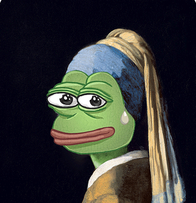

Un domani tutto diventerà un NFT?
The process that a tangible or intangible asset must go through in order to be digitally represented as an NFT.
Analisi della collezione di RTFKT

1. What is RTFKT ?
2. The functionality invented by RTFKT to replace a NFT that is burned with another NFT
3. Contract analysis
The Evolution of AI

Origins, Objectives, and Fields of Implementation